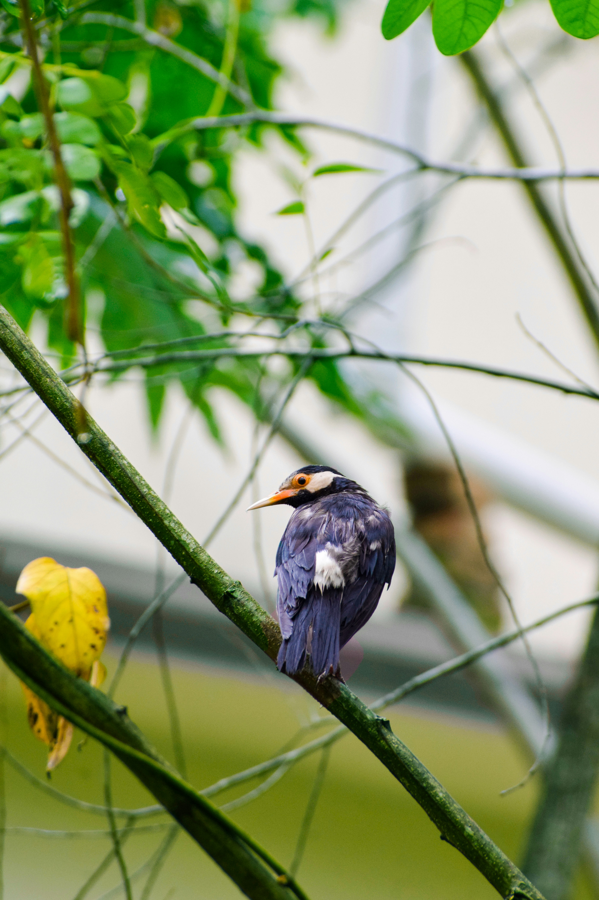

The Indian Pied Starling is a striking black-and-white starling with a pale bill and distinctive orange or reddish facial skin around the eye. It is a social and adaptable species that often feeds on the ground in groups. It consumes insects, fruits, grains, and other food and is frequently found around villages, farmland, wetlands, and urban areas. Compared with the similar Common Myna, it is distinguished by the combination of features described above. Its preference for farmland, villages, wetlands, gardens, open woodland, and cities also helps separate it from species that use different habitats. Its characteristic behaviour, including social and often forages in groups on open ground, provides another useful field clue. Taken together, these differences make it easier to distinguish from similar species when the bird is seen clearly.